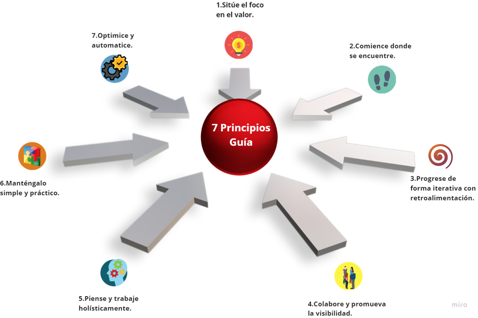
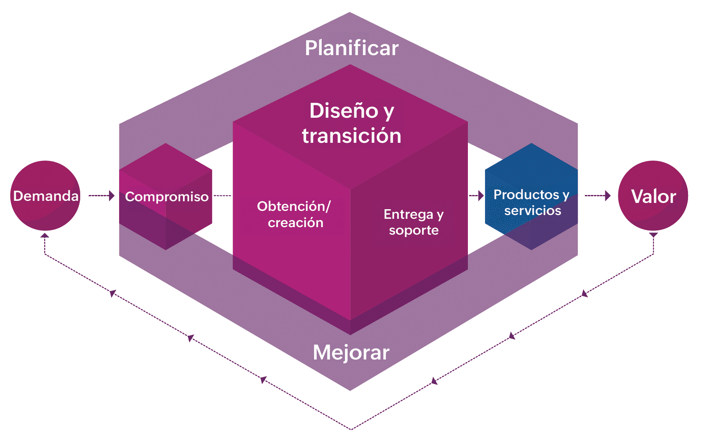

El sistema de valor del servicio (SVS) ofrece una visión global de cómo los componentes de la organización funcionan conjuntamente para generar valor. Abarca los principios guía, las estructuras de gobernanza, la cadena de valor del servicio, las prácticas de gestión y los mecanismos de mejora continua.
En lugar de tratar cada elemento de forma aislada, el SVS pone de manifiesto sus interdependencias y su contribución colectiva a los resultados empresariales. Esta flexibilidad la distingue de los modelos de procesos lineales tradicionales, permitiendo a los equipos adaptar la secuencia y la combinación de actividades en función de lo que pretenden lograr, haciendo que el marco se adapte a la complejidad del mundo real.
Son recomendaciones que guían a una organización en todas las circunstancias, independientemente de los cambios en sus objetivos, estrategias, tipo de trabajo o estructura de gestión. Fomentan la toma de decisiones correcta y la mejora continua.

Es el medio a través del cual una organización es dirigida y controlada. Asegura que las políticas y estrategias se implementen correctamente y que el desempeño de la organización esté siempre alineado con los objetivos del negocio.

Representa las actividades fundamentales que impulsan la prestación del servicio. Se combinan en diversas configuraciones según la situación. Las 6 actividades de la cadena de valor son: